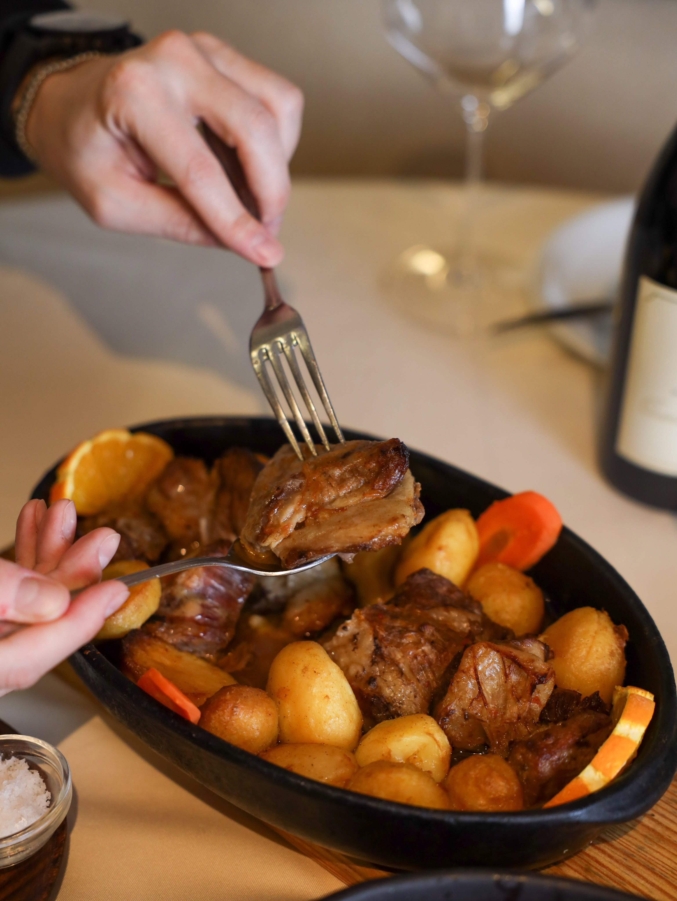
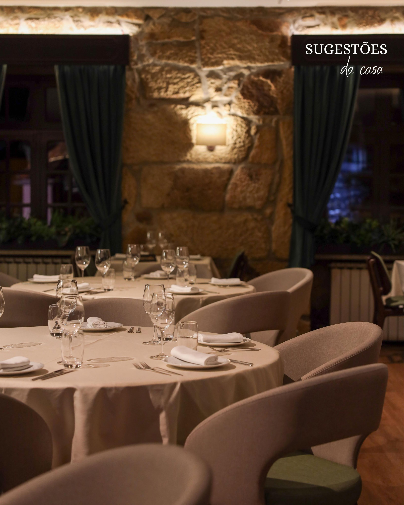
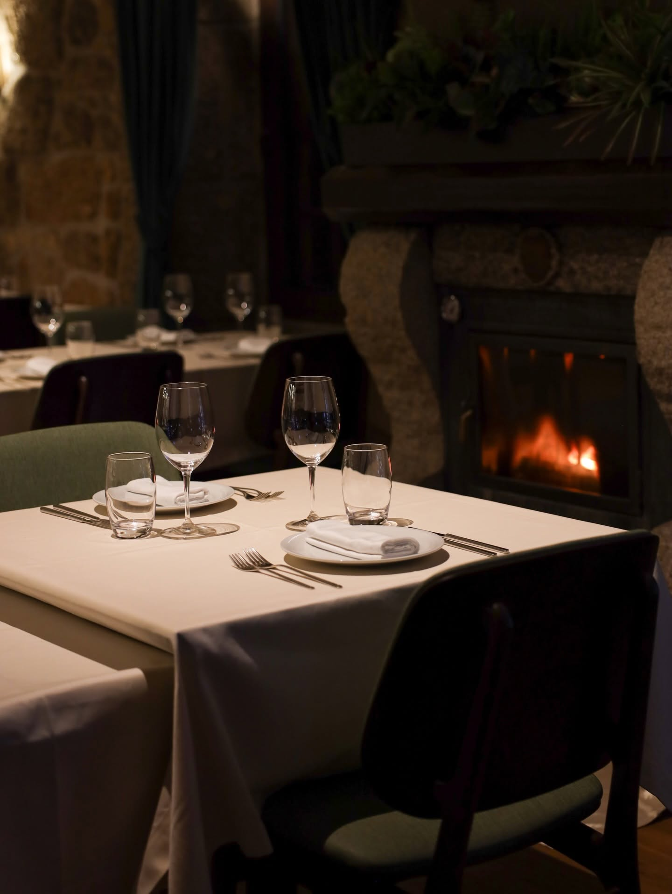
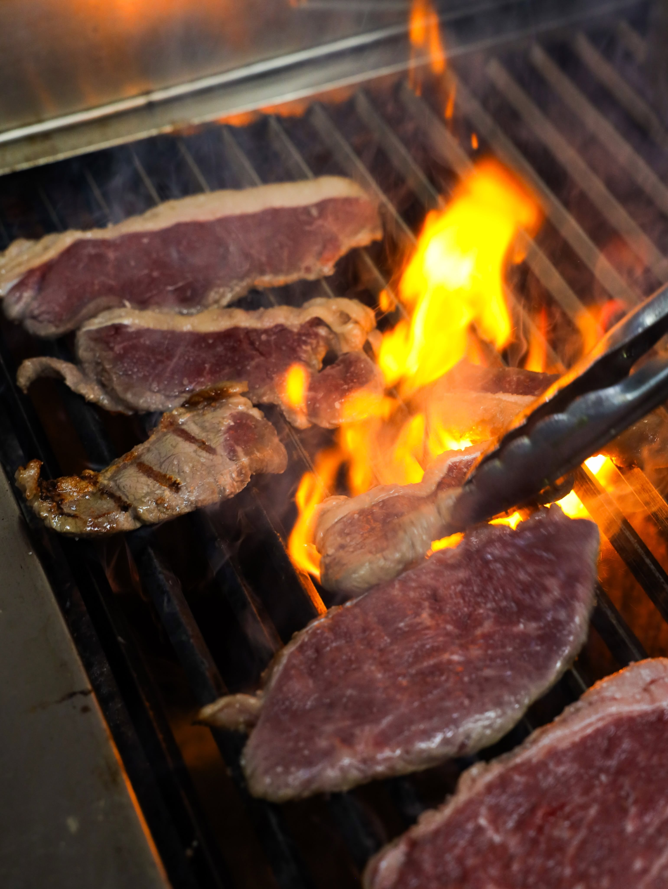
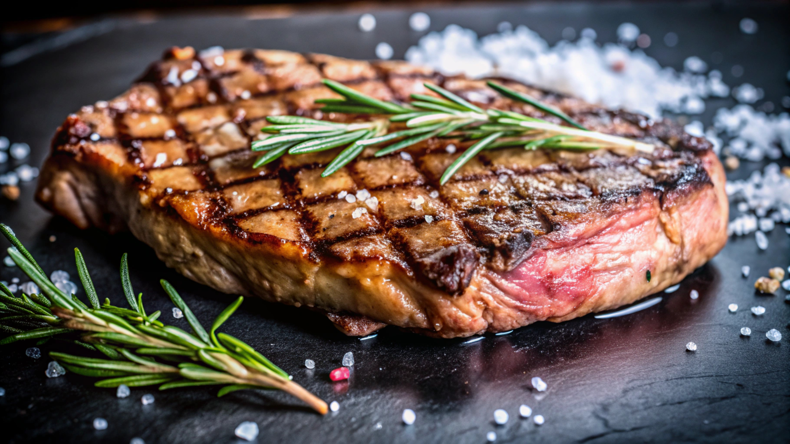
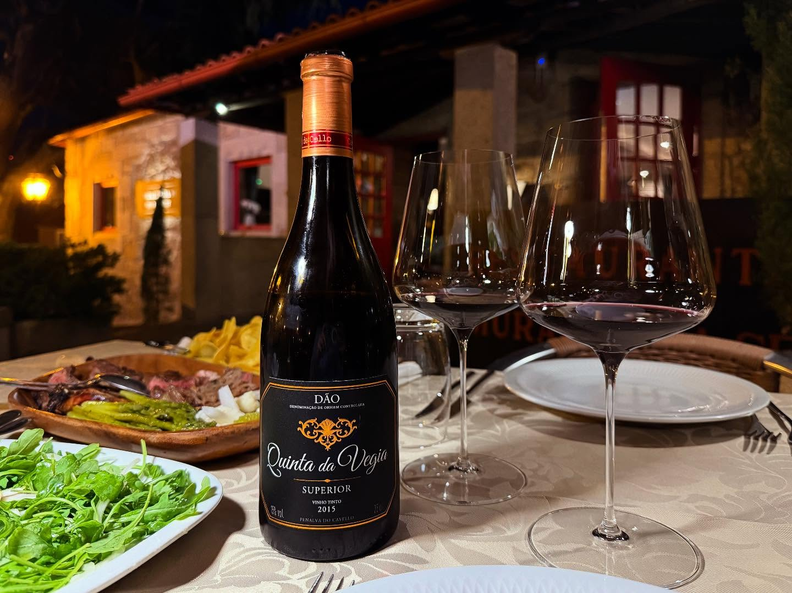
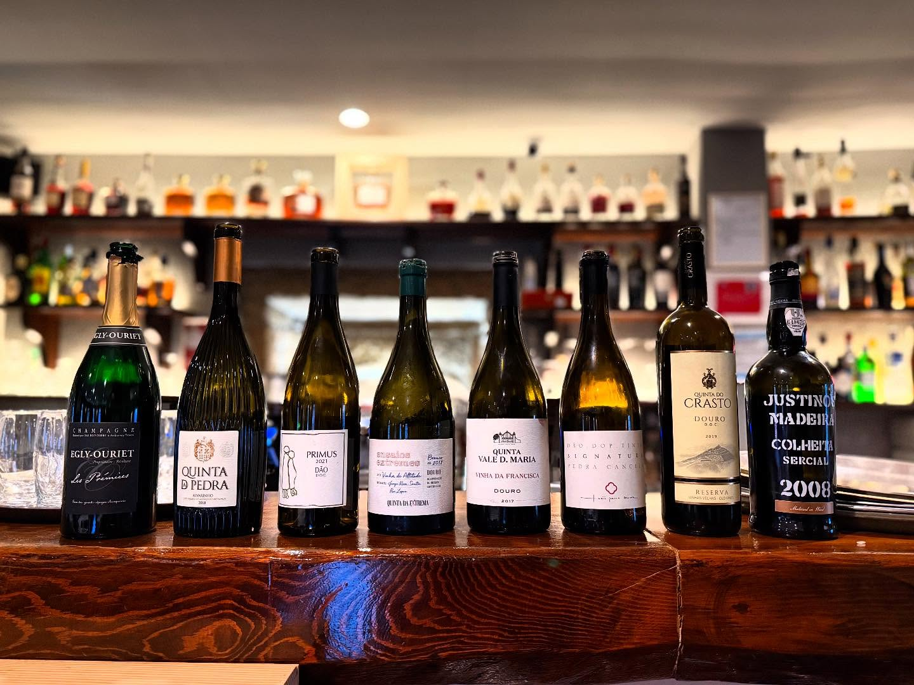
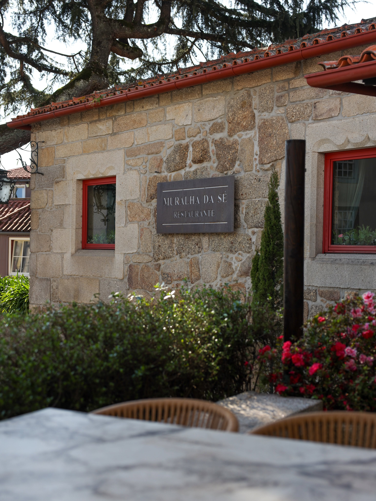

Cabrito
Um clássico da Beira, assado com batatinhas.
Adro da Sé · Viseu
Cozinha tradicional da Beira, numa antiga casa de granito encostada à muralha da cidade.
Ligar para reservar232 437 777
Porquê a Muralha da Sé
Uma antiga casa de granito, cuidadosamente recuperada, construída contra a velha muralha da cidade. Fica no Adro da Sé, mesmo ao lado da Catedral, do Museu Grão Vasco e da Igreja da Misericórdia.
Comer dentro destas paredes de pedra, a dois passos da Sé, é sentar-se à mesa no coração histórico de Viseu.


Destaques da ementa
Cozinha regional tradicional, feita com tempo e com os produtos da região.

Um clássico da Beira, assado com batatinhas.

A carne da casa, com o nome da casa.

Novilho servido no pau de loureiro, à maneira da casa.
Venha provar. Reserve a sua mesa por telefone.
Ligar para reservar

Vinhos
A Muralha da Sé tem uma garrafeira grande, com muitos vinhos da região do Dão — a região vinícola de Viseu.
Peça uma sugestão para acompanhar o cabrito ou a carne na brasa.
Horário
| Segunda | Almoço e jantar |
|---|---|
| Terça | Encerrado |
| Quarta | Almoço e jantar |
| Quinta | Almoço e jantar |
| Sexta | Almoço e jantar |
| Sábado | Almoço e jantar |
| Domingo | Só almoço |
Morada
No Adro da Sé, junto à Catedral, ao Museu Grão Vasco e à Igreja da Misericórdia.
Ver no mapa
Perguntas frequentes
Cozinha tradicional da região da Beira. Entre os pratos estão o cabrito, o naco de lombo à Muralha da Sé e o entrecôte de novilho em pau de loureiro.
Estamos encerrados à terça-feira. Ao domingo não servimos jantar.
Na Rua Adro da Sé, 24, em Viseu, ao lado da Sé, do Museu Grão Vasco e da Igreja da Misericórdia.
Sim. Além da esplanada, temos duas salas de refeição.
Por telefone, para o 232 437 777, ou por e-mail, para muralha.se@gmail.com.
Contactos
A forma mais rápida de reservar é por telefone.
Ligar para reservar